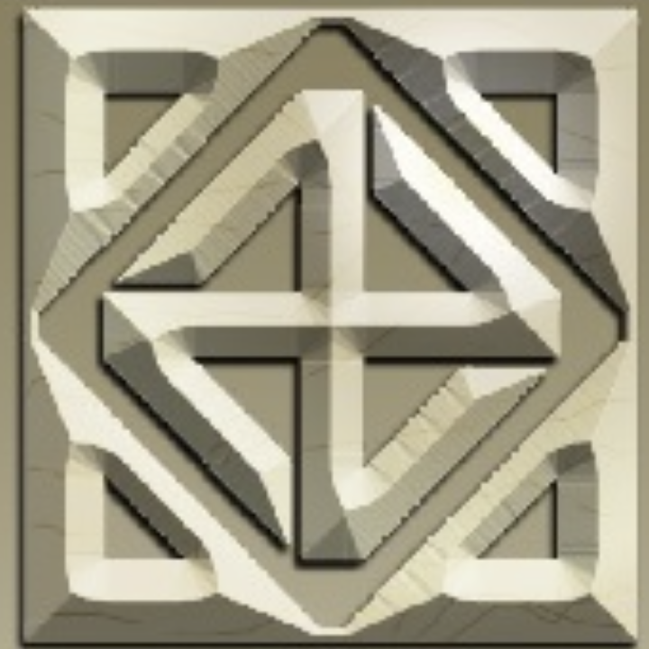
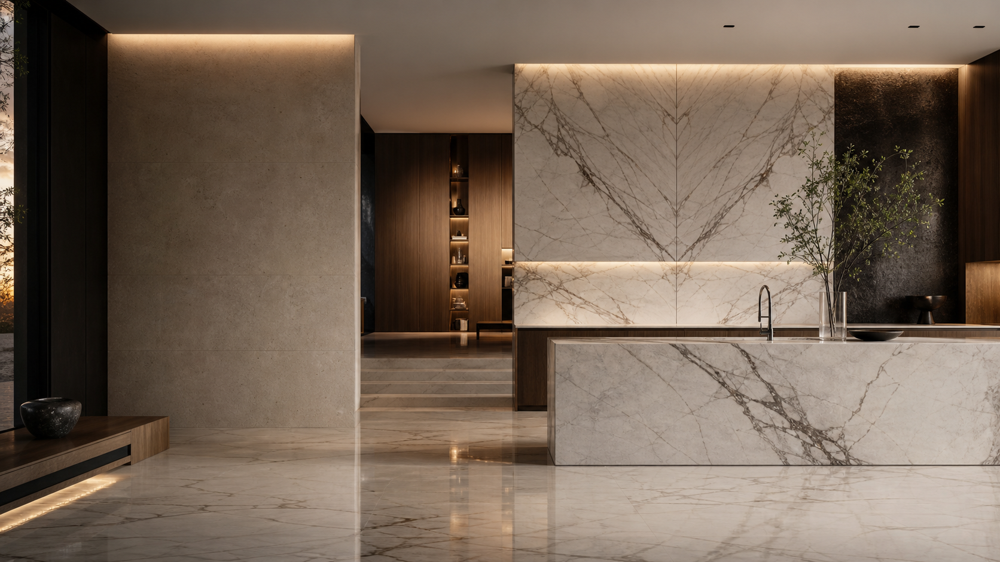

Pisos y muros
Continuidad mineral
Revestimientos, pisos pulidos, muros protagonistas y transiciones limpias.

Pietra Santa Stone Atelier · DurangoMármol · Granito · Cantera · Cuarzo · Ónix · Travertino
Pietra Santa selecciona, suministra e instala acabados de piedra natural con una lectura precisa del espacio: proporción, veta, junta, luz y permanencia.

Sin precios por m². Cada propuesta se mide, especifica y cotiza según el proyecto.
Un acabado premium depende de más que elegir una placa hermosa. La veta debe dialogar con el espacio, el canto debe sentirse proporcionado y la instalación debe desaparecer para que el material sea protagonista.
Desde Río Miravalles 190b, Fraccionamiento La Forestal, trabajamos proyectos residenciales, comerciales y conmemorativos en Durango con una premisa clara: cada cotización se define por material, medidas, cortes, preparación e instalación.
Piedra natural, medida exacta, instalación silenciosa.
Revestimientos, pisos pulidos, muros protagonistas y transiciones limpias.

Islas, barras, cubiertas, respaldos y cantos ejecutados a medida.

Lavabos, muros húmedos, regaderas y detalles sellados con criterio técnico.

Piezas conmemorativas, bases, placas y elementos tallados en piedra.
Vetas nobles para interiores luminosos, baños y piezas protagónicas.
Resistencia, profundidad visual y desempeño para cubiertas de uso diario.
Textura regional para muros, fachadas, detalles y acentos arquitectónicos.
Superficies consistentes para cocinas, barras y proyectos contemporáneos.
Translucidez y dramatismo para piezas especiales con intención decorativa.
Calidez, poro y movimiento para ambientes serenos y atemporales.
Levantamiento del espacio, condiciones de soporte, cortes y accesos.
Material, veta, formato, espesor y acabado adecuados para el uso real.
Corte, colocación, sellado, nivelación, remates y limpieza final.
Para cotizar, comparte medidas aproximadas, fotos del área, material deseado y ubicación del proyecto. La propuesta se prepara de forma personalizada.